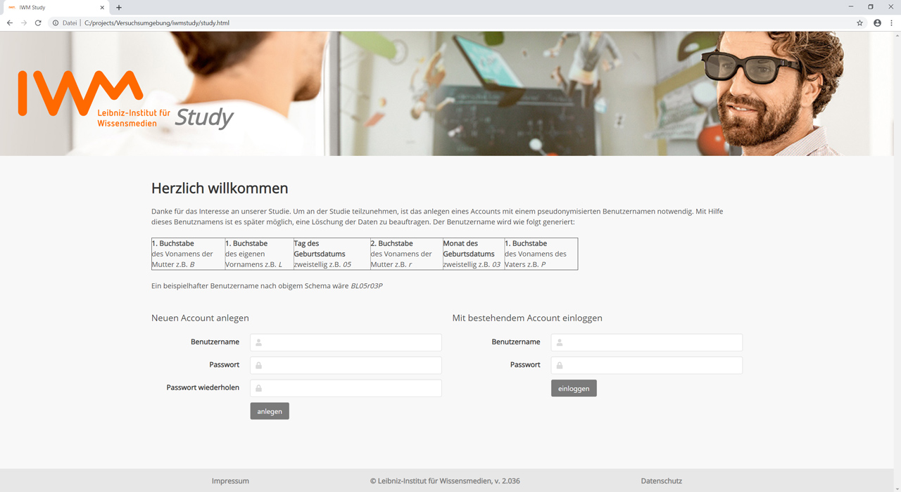
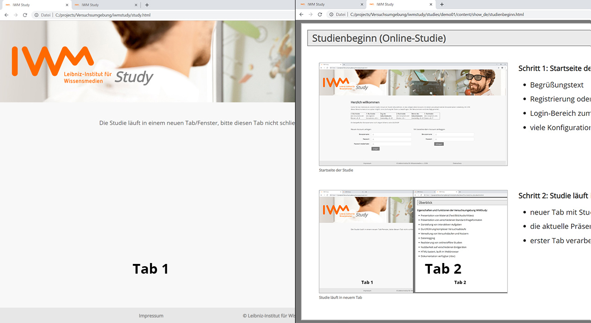

Studienbeginn (Online-Studie)

Schritt 1: Startseite der Studie
- Begrüßungstext
- Registrierung oder Teilnahme ohne Account (konfigurierbar)
- Login-Bereich zum Fortsetzen einer bereits begonnenen Studie
- anpassbar, z.B. Text, Passwort, E-Mail, Gruppe...

Schritt 2: Studie läuft in neuem Tab
- neuer Tab mit Studienmaterial wird im Vordergrund geöffnet
- aktuelle Präsentation ist Studienmaterial und läuft in Tab 2
- erster Tab verarbeitet die Studie und muss geöffnet bleiben